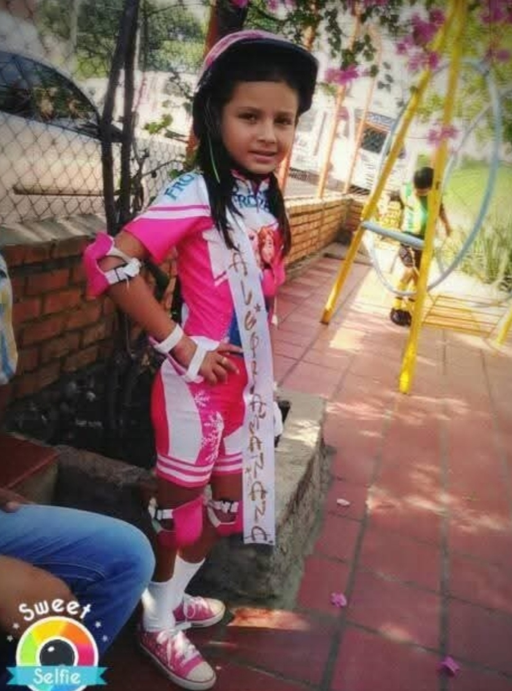
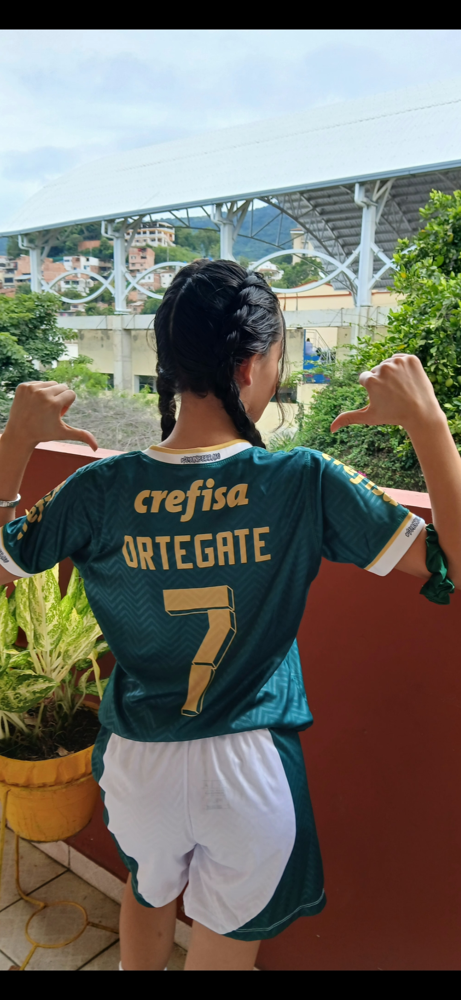

En mi tiempo libre me gusta realizar actividades que me permiten divertirme, desestresarme y mantenerme activa. Estos son mis hobbies favoritos.

Desde muy pequeña me ha apasionado el patinaje. Me encanta patinar y, cuando tengo tiempo libre, disfruto mucho practicar este deporte. Jamás me cansaría de hacerlo, ya que es mi deporte favorito. Me hubiera gustado poder llevarlo más allá de un hobby, pero por el momento no ha sido posible. Aun así, siempre será una actividad muy especial para mí.

En mis tiempos libres también juego fútbol con mis compañeras del colegio. Es una actividad que disfruto mucho y que practico con más frecuencia que el patinaje. Además de divertirme, me permite compartir con mis amigas, trabajar en equipo y mantenerme activa. Volver a la página principal